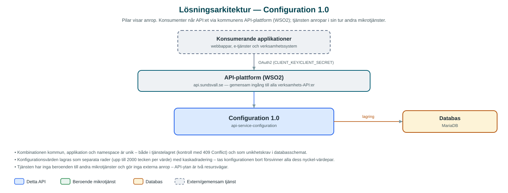

Configuration
Enkel lagringstjänst för applikationskonfiguration – ger kommunens webbapplikationer ett standardiserat sätt att spara och hämta inställningar som nyckel-värdepar.
Om API:et
Configuration ersätter ad hoc-lösningar för applikationsinställningar med ett gemensamt, återanvändbart API. Frontendteam kan lagra och hämta konfiguration för sina applikationer – till exempel funktionsflaggor eller rollistor – utan att varje applikation behöver en egen lagringslösning.
Varje konfiguration identifieras av kombinationen kommun, namespace och applikation, och innehåller konfigurationsdata som nyckel-värdepar där varje nyckel kan ha flera värden. En konfiguration kan skapas, hämtas, uppdateras och tas bort, och alla konfigurationer inom ett namespace kan listas i ett anrop.
Tjänsten är medvetet enkel: en renodlad CRUD-tjänst utan beroenden till andra mikrotjänster, med unikhetskrav som hindrar att samma applikation får dubbla konfigurationer inom ett namespace.
Det här gör API:et
- Hämta konfiguration – Hämta en applikations konfiguration som nyckel-värdepar, eller alla konfigurationer inom ett namespace.
- Skapa konfiguration – Registrera konfiguration per kommun, namespace och applikation; dubbletter avvisas med 409 Conflict.
- Uppdatera och ta bort – Konfigurationen kan uppdateras i sin helhet eller tas bort; kopplade nyckel-värdepar följer med automatiskt.
- Flervärdesnycklar – Varje konfigurationsnyckel kan ha flera värden, till exempel en lista av roller.
API-dokumentation
API:ets samtliga resurser, parametrar och datamodeller finns beskrivna i en OpenAPI-specifikation som är hämtad ur källkodsförrådet. Den kan utforskas interaktivt i Swagger UI eller laddas ner som YAML. Programvaruförteckningen (SBOM) listar tjänstens samtliga tredjepartskomponenter med version och licens.
Teknisk dokumentation
Nedan beskrivs hur tjänsten är uppbyggd, vilka andra tjänster den anropar och vad som krävs för att driftsätta den. Informationen är härledd ur källkoden och dess konfiguration på GitHub.
Arkitektur

API:et är en mikrotjänst (Java 25 (via dept44-föräldern), Spring Boot via kommunens gemensamma tjänsteplattform dept44 (8.0.8), byggd med Maven). Konsumenter når tjänsten via kommunens gemensamma API-plattform (WSO2) på api.sundsvall.se – tjänsten anropas aldrig direkt. Lagring: MariaDB med Flyway-migrationer; lagrar konfigurationer och deras nyckel-värdepar med unikhetskrav per kommun, applikation och namespace.
Teknikstack
- Språk: Java 25 (via dept44-föräldern)
- Ramverk: Spring Boot via kommunens gemensamma tjänsteplattform dept44 (8.0.8), byggd med Maven
- Databas: MariaDB med Flyway-migrationer; lagrar konfigurationer och deras nyckel-värdepar med unikhetskrav per kommun, applikation och namespace
- Övrigt: Renodlad CRUD-tjänst utan externa integrationer
Beroenden till andra mikrotjänster
Inga anrop till andra mikrotjänster hittades i källkodens konfiguration.
Programvaruförteckning
Tjänsten bygger på 230 tredjepartskomponenter fördelade på 14 olika licenser. Till skillnad från tabellen ovan, som listar andra mikrotjänster, avses här de programbibliotek som ingår i bygget. Se programvaruförteckningen för hela listan.
Konfiguration och driftsättning
- MariaDB-anslutning; databasschemat versionshanteras med Flyway
- Inga integrations- eller OAuth2-klientinställningar behövs – tjänsten saknar beroenden till andra tjänster
- Anrop görs per kommun – municipalityId ingår i alla API-vägar tillsammans med namespace
Noterbart ur källkoden
- Kombinationen kommun, applikation och namespace är unik – både i tjänstelagret (kontroll med 409 Conflict) och som unikhetskrav i databasschemat.
- Konfigurationsvärden lagras som separata rader (upp till 2000 tecken per värde) med kaskadradering – tas konfigurationen bort försvinner alla dess nyckel-värdepar.
- Tjänsten har inga beroenden till andra mikrotjänster och gör inga externa anrop – API-ytan är två resursvägar.
- OpenAPI-specens info.title är "api-service-configuration" (härledd ur applikationsnamnet).
Källkod
Källkoden är öppen och finns hos Sundsvalls kommun på GitHub. I källkodsförrådet finns även instruktioner för att klona, konfigurera och starta tjänsten i egen miljö.